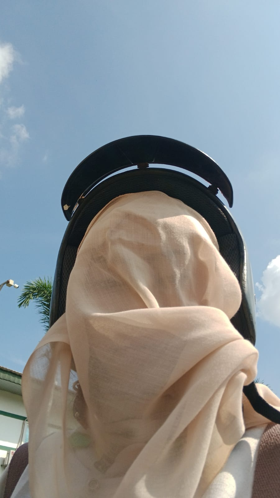

Makasi udah bertahan sampai saat ini yaa CANTIKKK :)
kenapa aku menggambarkan laut disini cantikk? karena aku tahu karena kamu suka warna biru itu melambangkan sesuatu yang dingin seperti air yang tenang tiada siapapun bisa melukai kamu, dan ya laut itu sangat indah bukan layak nya diri kamu riani namun dilautan yang indah itu terdapat banyak hal mengerikan didalam nya bukan sama seperti trauma yang kamu miliki, i'm just kidding okey
Cantikkk 😁→
kenapa aku menggambarkan bintang disini cantikk? karena menurut aku bintang itu bukan hanya sebuah benda tata surya yang hanya untuk menerangi bumi saja, tetapi dia juga yang membuat bumi menjadi indah layak nya senyuman mu dan aku harap senyuman mu itu abadi karena aku pingin kamu tersenyum tiap hari, even your day is so hard i know everything is so hard but at the end will be fine :)
Lucuuu →kenapa aku menggambarkan ikan disini? karena kamu tahu jika ikan itu hidup di dalam laut dia punya kebebasan untuk berenang kemanapun yang ia mau tapi kamu harus-hati karena banyak ikan itu sering kali makan ikan nah sama di hidup ini kamu juga harus berhati-hati okeyy apalagi kamu suka asbun wkwkkwk tapi gapapa kok kalo kamu suka asbun gitu intinya kamu gak jaim kalo ketemu orang
Imuttt